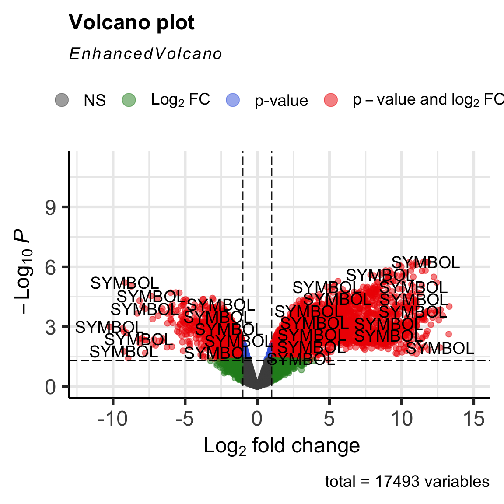
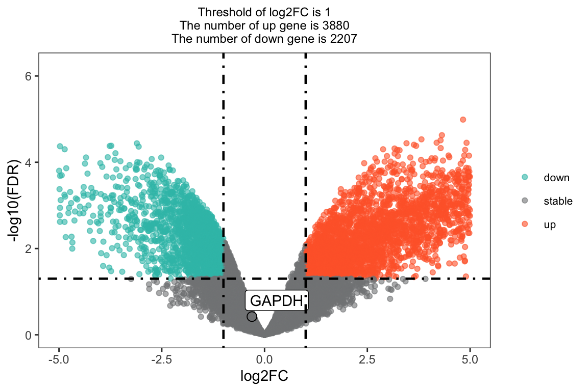
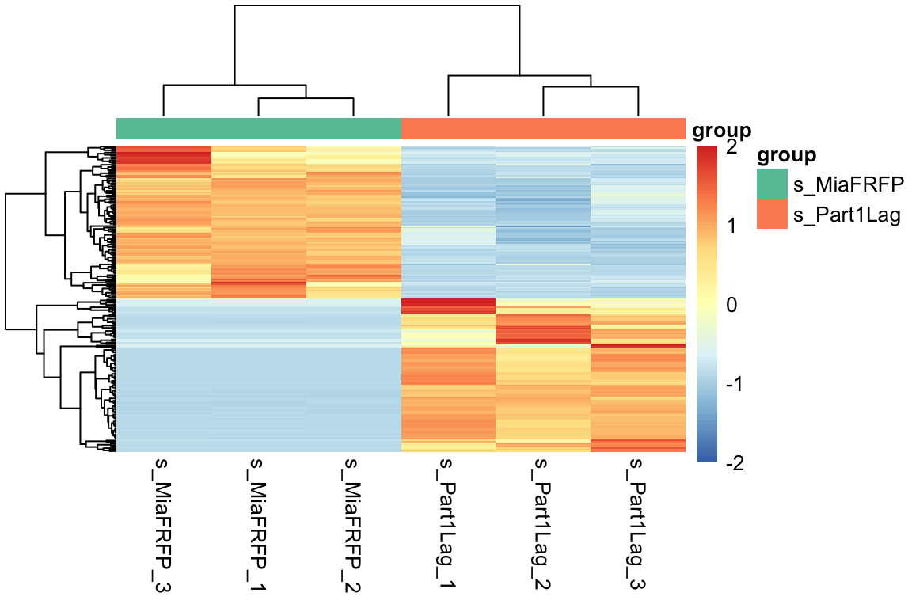

第 6 章 差异基因作图
6.1 加载数据
# 加载变量
load(file = 'Rdata/symbol_matrix.Rdata')
load(file = 'Rdata/DEG_edgeR.Rdata')
# 输出文件夹
OUT_FOLDER <- "DEG_ANalysis"
# title
group <- group_list
title <- paste0(group[1], "_vs_", group[2])
# 读取差异基因
# cut_log2FC <- mean(abs(total$log2FoldChange)) + 2 * sd(abs(total$log2FoldChange))
# log2FC_t <- ifelse(cut_log2FC > 1, 1, cut_log2FC)
log2FC_t <- 1
pvalue_t <- 0.05
# 计算 regulation
total$regulation = ifelse(total$FDR > pvalue_t, 'stable',
ifelse(total$log2FoldChange > log2FC_t, 'up',
ifelse(total$log2FoldChange < -log2FC_t, 'down', 'stable')))
# 提取所需的列
nrDEG <- total[, c("SYMBOL","log2FoldChange", "FDR", "regulation")]
colnames(nrDEG) <- c("SYMBOL", 'log2FC', 'FDR', 'regulation')6.2 火山图
res <- nrDEG
library(EnhancedVolcano)
EnhancedVolcano(res,
x = 'log2FC',
y = "FDR",
pCutoff = 0.05,
lab = "SYMBOL")
library(ggplot2)
nrDEG <- nrDEG
# 创建文本信息
this_tile <- paste0('Threshold of log2FC is ', round(log2FC_t, 3),
'\nThe number of up gene is ', nrow(nrDEG[nrDEG$regulation == 'up',]),
'\nThe number of down gene is ', nrow(nrDEG[nrDEG$regulation == 'down',]))
# 选择关注的基因，添加标签，以 GAPDH 为例
target_gene = c('GAPDH')
for_label <- dplyr::filter(nrDEG, SYMBOL %in% target_gene)
ggplot(data = nrDEG, aes(x = log2FC, y = -log10(FDR))) +
geom_point(alpha = 0.6, size = 1.5, aes(color = regulation)) +
geom_point(size = 3, shape = 1, data = for_label) +
ggrepel::geom_label_repel(aes(label = (for_label$SYMBOL)), data = for_label,
max.overlaps = getOption("ggrepel.max.overlaps", default = 20),
color = "black") +
scale_color_manual(values = c("#34bfb5", "#828586", "#ff6633")) +
labs(y = "-log10(FDR)") +
geom_vline(xintercept = c(log2FC_t, -log2FC_t), lty = 4, col = "black", lwd = 0.8) +
geom_hline(yintercept = -log10(pvalue_t), lty = 4, col = "black", lwd = 0.8) +
xlim(-5, 5) +
theme_bw() +
ggtitle(this_tile) +
theme(panel.grid = element_blank(),
plot.title = element_text(size = 9, hjust = 0.5),
legend.title = element_blank(),
legend.text = element_text(size = 8))
6.3 差异基因热图
library(pheatmap)
# 提取所需的列
nrDEG = total[, c("SYMBOL","log2FoldChange", "FDR")]
colnames(nrDEG) = c("SYMBOL", 'log2FC', 'FDR')
# 获取上下调前 100 的基因名
x <- nrDEG$log2FC
names(x) <- nrDEG$SYMBOL
cg <- c(names(head(sort(x), 100)), names(tail(sort(x), 100)))
# 数据归一化
dat = log2(edgeR::cpm(symbol_matrix)+1)
n <- t(scale(t(dat[cg, ])))
n[n > 2] = 2
n[n < -2] = -2
# 创建分组信息
ac <- data.frame(group = group_list)
rownames(ac) <- colnames(n)
palette <- RColorBrewer::brewer.pal(3, "Set2")[1:2]
names(palette) <- names(table(group_list))
# 绘制带有分组注释的热图
pheatmap(n,
show_colnames = TRUE,
show_rownames = FALSE,
cluster_cols = TRUE,
annotation_colors = list(group = palette),
annotation_col = ac,
breaks = seq(-2,2, length.out = 100))